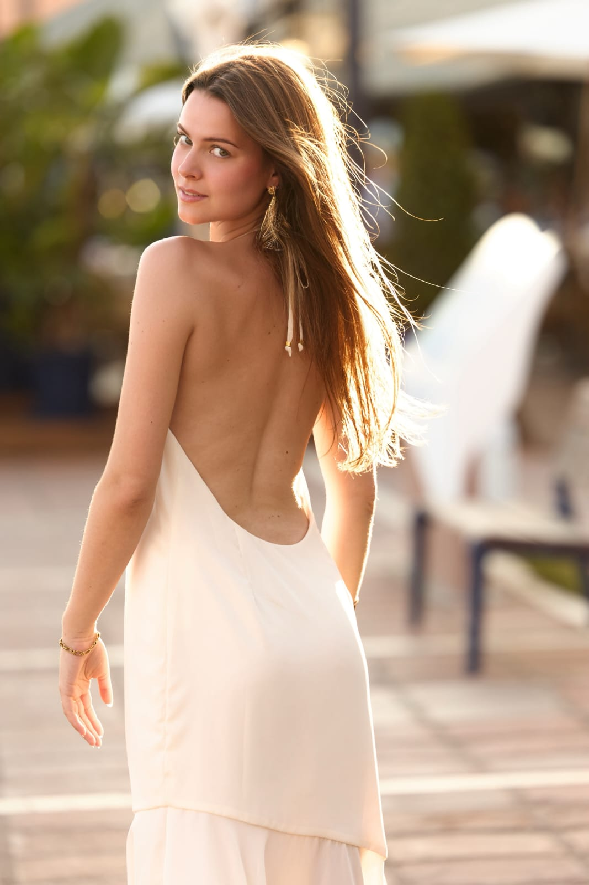
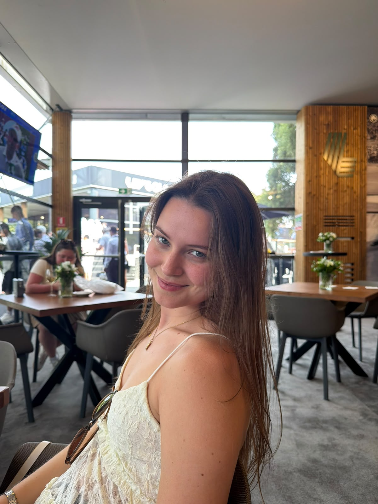

Comunicadora & creadora de contenido
Laura
Koziel Jiménez
Cuento historias frente a cámaras y micrófonos — hoy, con la misma voz, visto la moda.
Descubre másPerfil
«Siempre frente y detrás de la cámara.»
Graduada en Comunicación Audiovisual por la Universidad de Málaga, Laura ha estado frente a cámaras y micrófonos desde la universidad — presentando la Gala CAV Awards, colaborando en radio y televisión, formándose en locución y doblaje. Hoy dedica ese mismo don de gentes y ojo creativo a la moda: crea contenido UGC y gestiona redes sociales para tiendas y marcas en Sotogrande y Madrid, siempre frente y detrás de la cámara.
Gala CAV Awards 2023 — Canal Fiesta Radio — Canal Málaga — LIV Golf Valderrama 2025 — ES nativo · EN C1 · PT avanzado

Portfolio
Campañas & colaboraciones
Cargando publicaciones…
Servicios
Qué puedo hacer por tu marca
-
Contenido UGC
Me fotografío como modelo llevando la ropa de tu marca y produzco contenido editorial listo para redes.
-
Community Management
Gestión integral de tus redes sociales: estrategia de contenido, calendario y crecimiento de comunidad.
-
Eventos & campañas de venta
Organización de eventos, pop-ups y campañas de venta, con dirección creativa de principio a fin.
-
Presentación en directo
Presentación de eventos y streaming en directo, con experiencia real frente al público y a cámara.